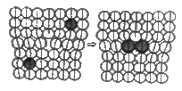
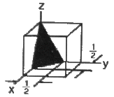
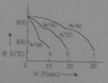

금속재료산업기사 (2012-03-04 기출문제)
1과목: 금속재료
1. 다음의 금속 중 알칼리 및 알칼리토류군에 해당되는 것은?
- U, Th, Pu
- Ge, Si, In
- W, V, Zr
- Na, Li, Cs
(정답률: 69%)

2. Al - Cu(3 ~ 8%) - Si(3 ~ 8%)계로 주조성이 개선되고 피삭성이 좋은 합금은?
- 실루민
- 알드레이
- 라우탈
- 하이드로날륨
(정답률: 65%)
3. 양은(nickel silver)에 대한 설명으로 틀린 것은?
- 저항온도계수가 낮다.
- 내열성이 우수하다.
- 내식성이 우수하다.
- 조성범위는 Cu에 10~20%Ni 과 15~30%Zn 이 많이 사용된다.
(정답률: 75%)
4. 다음 중 쾌삭강에 대한 설명으로 틀린 것은?
- 강재에 Se, Pb 등의 원소를 배합하여 피삭성을 좋게한 강을 쾌삭강이라 한다.
- S 쾌삭강에 Pb을 동시에 첨가하여 쾌삭성을 더욱 향상시킨 것을 초쾌삭강이라 한다.
- Pb 쾌삭강은 탄소강 또는 합금강에 0.1~0.3% 정도의 Pb를 첨가하여 피삭성을 좋게한 강이다.
- Pb 쾌삭강에서 Pb 는 Fe 중에 고용되어 Fe가 chip breaker의 역할과 윤활제 작용을 한다.
(정답률: 73%)
5. 구상흑연주철이 주조한 상태에서 나타나는 조직이 아닌 것은?
- Cementite형
- Pearlite형
- Ferrite형
- Austenite형
(정답률: 62%)
6. 초경합금 중의 하나인 탄화 텅스텐(WC)에 관한 설명으로 틀린 것은?
- 절삭공구로 사용된다.
- 매우 높은 고온강도를 갖는다.
- 소결공정을 통하여 제조한다.
- 열전도도는 고속도강보다 낮으나 절삭속도는 빠르다.
(정답률: 72%)
7. 다음 중 각종 강에서 발생할 수 있는 취성에 대한 설명으로 틀린 것은?
- 500~600℃에서 청열 취성을 나타낸다.
- P 를 많이 함유하면 저온 취성이 나타난다.
- S 를 많이 함유하면 적열 취성이 나타난다.
- 뜨임 취성을 방지하기 위해 Mo 을 첨가한다.
(정답률: 75%)
8. 알루미늄의 화학적 성질을 설명한 것 중 옳은 것은?
- 염화물 용액 중에서 내식성이 우수하다.
- 암모니아수 중에서는 빨리 부식된다.
- 80%이상의 질산에서는 침식되지 않고 잘 견딘다.
- 산성용액 중에서는 수소이온농도의 증가에 따라 부식이 감소한다.
(정답률: 56%)
9. 하드필드(Hardfield)강은 기지가 오스테나이트 조직이며, 경도가 높아 기어, 레일 등의 내마모용 재로로 사용된다. 이 강의 탄소와 망간의 함유량으로 옳은 것은?
- 탄소 : 0.35~0.55%C, 망간 : 1~2%Mn
- 탄소 : 0.9~1.3%C, 망간 : 1~2%Mn
- 탄소 : 0.35~0.55%C, 망간 : 10~15%Mn
- 탄소 : 0.9~1.3%C, 망간 : 10~15%Mn
(정답률: 69%)
10. 형상기억합금에서 형상기억효과의 기구(mechanism)는?
- 액상에서 전단응력이 구동력이 되어 결정배열이 바뀌는 확산에 의한 상변태
- 액상에서 전단응력이 구동력이 되어 결정배열이 균열을 일으키는 상변태
- 고상에서 확산을 수반하여 주로 전단변형에 의하여 결정구조가 변하는 상변태
- 고상에서 확산을 수반하지 않고 주로 전단변형에 의하여 결정구조가 변하는 상변태
(정답률: 56%)
11. 금속재료의 성질 중 비중에 관한 일반적인 설명으로 틀린 것은?
- 비중은 4℃의 순수한 물의 무게를 기준으로 무게의 비를 수치로 표시한다.
- 인장강도를 비중으로 나눈 값이 비강도이다.
- 단조, 압연, 인발 등으로 가공된 금속이 주조상태 보다 비중이 크다.
- 상온 가공한 금속을 가열한 후 서랭시킨 것이 급랭시킨 것보다 비중이 작다.
(정답률: 61%)
12. 0.3%C를 함유한 강은 상온에서 초석 페라이트를 약 몇 % 함유하고 있는가? (단, 공석정의 탄소 고용량은 0.80% 이다.)
- 45.5%
- 55.5%
- 62.5%
- 75.5%
(정답률: 60%)
13. 다음 중 Mg-Al 합금에 해당되는 것은?
- 엘렉트론(Elektron)
- 엘린바(Elinvar)
- 파말로이(Permalloy)
- 하스텔로이(Hastelloy)
(정답률: 65%)
14. 주철의 조직과 성질에 대한 설명으로 옳은 것은?
- 주철 중에 함유되는 탄소형은 보통 0.85~1.2%정도이다.
- 유리탄소와 화합탄소의 합을 전탄소라 한다.
- 흑연이 많을 경우 그 파단면이 회색을 띠면 백주철이다.
- 회주철과 반주철이 혼합되어 있는 경우 파단면에 반점이 있는 백주철이 된다.
(정답률: 64%)
15. 자장강도와 자력의 강도가 서로 반대 방향인 반자 성체에 속하는 금속은?
- Al
- Fe
- Ni
- Co
(정답률: 56%)
16. 섬유강화금속에서 강화섬유로 사용되는 것이 아닌것은?
- SiC
- C(PAN)
- Fe
- 보론
(정답률: 58%)
17. 금속을 냉간가공하면 결정입자가 미세화 되어 재료가 단단해지는 현상은?
- 가공경화
- 취성경화
- 시효경화
- 표면경화
(정답률: 80%)
18. 아연 및 금형용 아연합금에 대한 설명으로 틀린것은?
- 아연은 건조한 공기 중에서는 거의 산화되지 않는 다.
- 아연은 대표적인 고용융점 금속이다.
- 금형용 아연합금의 대표적인 것으로는 KM합금, ZAS, Kirksite 등이 있다.
- 금형용 아연합금의 표준 성분은 Zn에 4%Al -3%Cu - 0.03%Mg 등으로 구성되어 있다.
(정답률: 72%)
19. 합금(Alloy)에 대한 설명으로 틀린 것은?
- 순수한 단체금속만을 합금이라 한다.
- 제조 방법은 금속과 금속, 금속과 비금속을 용융상태에서 융합하거나, 압축, 소결하는 방법 등이 있다.
- 첨가과정은 제조과정 중에 자연적으로 혼입되는 경우와 어떤 유용한 성질을 부여하기 위해 첨가하는 경우가 있다.
- 공업용 합금은 어떤 필요한 성질을 얻기 위해 한 금속에 다른 금속 또는 비금속을 첨가시켜서 얻은 금속적 성질을 가지는 물질을 말한다.
(정답률: 82%)
20. 다음 중 냉간가공에 대한 설명으로 틀린 것은?
- 표면상태가 미려하다.
- 제품의 정밀도가 우수하다.
- 냉간가공을 심하게 하면 산율이 낮아져 제품에 균열이 생기면서 깨진다.
- 금속을 낮은 온도에서 변형하여야 하므로 열간가공에 비하여 큰 힘이 필요하지 않다.
(정답률: 73%)
2과목: 금속조직
21. 전위와 용질원자사이의 상호작용으로 치환형 용질원자가 이동하여 나타난 그림에 대한 설명으로 옳은 것은?

- 칼날전위의 코어에 모인 치환형 용질원자이다.
- 나사전위의 코어에 모인 치환형 용질원자이다.
- 혼합전위의 코어에 모인 치환형 용질원자이다.
- 이온전위의 코어에 모인 치환형 용질원자이다.
(정답률: 76%)
22. 깁스의 상률에서 물의 자유도(F)를 구하는 관계식으로 옳은 것은? (단, C는 성분의 수, P는 상의 수이다.)
- F = C - P + 2
- F = P - C + 2
- F = C + P + 2
- F = C - P - 2
(정답률: 65%)
23. 다음 중 킹크 변형(kinking)의 발생이 가장 쉬운 경우는?
- FCC 금속을 slip 면에 수직으로 압축할 때
- BCC 금속을 slip 면에 수직으로 압축할 때
- HCP 금속을 slip 면에 수직으로 압축할 때
- BCC 금속을 slip 면에 평행하게 압축할 때
(정답률: 57%)
24. 다음 입방정계 그림에서 검정 삼각형의 결정면의 표시는?

- (100)
- (102)
- (110)
- (221)
(정답률: 68%)
25. 탄소강의 마텐자이트(Martensite)변태에 대한 설명으로 틀린 것은?
- 변태를 하고나면 표면에 기복이 생긴다.
- 마텐자이트 변태에서는 확산이 일어난다.
- 협동적 원자운동에 의한 변태이다.
- 마텐자이트가 생성되기 시작하는 온도를 Ms, 끝나는 온도를 Mf라 한다.
(정답률: 78%)
26. 고온도에서 불규칙상태의 고용체를 천천히 냉각하면 어느 온도에서 규칙격자가 형성되기 시작한다. 이때의 온도를 무엇이라 하는가?
- 재결정온도
- 전이온도
- 냉간가공온도
- 열간가공온도
(정답률: 67%)
27. 용융 금속이 응고 성장할 때 불순물이 가장 많이 모이는 곳은?
- 결정입내(結晶粒內)
- 결정입계(結晶粒界)
- 결정입내의 중심부(中心部)
- 결정격자 내의 중심부(中心部)
(정답률: 75%)
28. 표면확산, 입계확산, 격자확산 중 확산이 가장 빠른 순서에서 낮은 순서로 나타낸 것은?
- 표면확산 ＞ 입계확산 ＞ 격자확산
- 입계확산 ＞ 격자확산 ＞ 표면확산
- 격자확산 ＞ 표면확산 ＞ 입계확산
- 표면확산 ＞ 격자확산 ＞ 입계확산
(정답률: 77%)
29. 순철의 변태에 의하여 나타나는 조직이 아닌 것은?
- α - Fe
- β - Fe
- γ - Fe
- δ - Fe
(정답률: 68%)
30. 2성분계 평형상태도의 공통된 원칙 중 틀린 것은?
- 상태도에서 수평한 선은 자유도 0의 반응을 나타낸다.
- 하나의 영역에는 3개 이상의 상이 존재할 수 없다.
- 하나의 수평한 선은 3개 영역의 경계선이 된다.
- 하나의 수평한 선상에는 5개의 상이 공존한다.
(정답률: 69%)
31. 다음 중 쌍정에 관한 설명으로 틀린 것은?
- 기계적 쌍정은 BCC나 HCP 금속에서 급속으로 하중을 가하거나 낮은 온도에서 형성된다.
- 쌍정 변형에서는 쌍정면 양쪽의 결정 방위가 서로 같다.
- HCP 금속의 저면이 슬립하기 좋지 않은 방향으로 놓여 있을 때 쌍정 변형이 일어나기 쉽다.
- 인장시험 중에 쌍정이 생기면 응력-변형률 곡선에 톱니 모양이 나타난다.
(정답률: 42%)
32. 단위격자 내에 4개의 원자를 가지고 있는 금속원소는?
- Al
- Ti
- Mo
- Cr
(정답률: 57%)
33. X-ray 회절법에서 X-ray 입사각이 30˚ 일 때 이 금속의 면간거리는? (단, 회절상수 n은 1, 파장 λ는 10-5cm 이다.)
- 10-5cm
- 1/2 × 10-5cm
- √3/2 × 10-5cm
- 2 × 10-5cm
(정답률: 49%)
34. 다음 중 자기변태에 대한 설명으로 옳은 것은?
- 원자의 배열의 변화를 수변하는 변태이다.
- 자기의 강도가 변한다.
- A3 변태점이다.
- A4 변태점이다.
(정답률: 66%)
35. 점결함 중 원자공공에 대한 설명으로 옳은 것은?
- 결정격자의 격자점 중간에 원자가 위치한 상태
- 결정격자의 격자점 중간에 원자가 위치하지 않는 상태
- 결정격자의 격자점 중간에 여분의 원자가 위치한 상태
- 서로 다른 종류의 원자가 격자점의 원자와 치환되어 들어간 상태
(정답률: 64%)
36. 치환형 고용체에 대한 설명으로 틀린 것은?
- 두 금속사이에 원자 반경이 15% 이상 차이가 나면 거의 고용체를 만들지 않는다.
- 원자 반경의 차이가 작은 금속끼리는 고용도가 증가한다.
- 결정구조가 다른 금속끼리는 고용도가 크다.
- 고용도의 차이 때문에 합금의 성질이 크게 변화한다.
(정답률: 52%)
37. 철-탄소 상태도에서 상변태를 취급할 때 온도의 변화가 없는 3개의 불변점(Invariant point)이 아닌 것은?
- 편정점(Monotectic point)
- 포정점(Peritectic point)
- 공정점(Eutectic point)
- 공석점(Eutectoid point)
(정답률: 70%)
38. (111)슬립면과 [110]면의 slip system 을 가지는 금속으로만 이루어진 것은?
- Cu, Pd, Pt
- Sr, Al, Hf
- Cr, Fe Mo
- Ni, Ag, Po
(정답률: 63%)
39. 2원계 상태도에서 전율고용체일 때 경도적 측면에서 A, B 두 성분의 양이 어느 정도일 때 가장 높은가?
- A : B = 50% : 50%일 때
- A : B = 30% : 70%일 때
- A : B = 40% : 60%일 때
- A : B = 20% : 80%일 때
(정답률: 77%)
40. 전위의 재배열과 소멸에 의해 가공된 결정 내부의 변형에너지와 항복경도가 감소되는 현상을 무엇이라고 하는가?
- 회복
- 소성
- 재결정
- 가공경화
(정답률: 49%)
3과목: 금속열처리
41. 마레이징강의 시효(aging)처리는 어떤 현상을 이용한 금속강화 방법인가?
- 석출강화
- 고용강화
- 분산강화
- 규칙-불규칙강화
(정답률: 70%)
42. 고속도강(High Speed Steel)은 주 합금원소의 함유량에 의해 W계, Mq계로 대변한다. 이때 각 주요원소의 특징을 설명한 것 중 틀린 것은?
- W 은 고온경도가 높은 특징이 있다.
- Cr 은 내산화성과 경도를 향상시킨다.
- V 은 내마열성을 향상시킨다.
- Co 는 내열성과 공구 절삭 내구력을 약화시키며, Co 가 증가하면 인성을 증가시킨다.
(정답률: 66%)
43. 염욕열처리에 대한 설명으로 틀린 것은?
- 염욕의 열전도도가 낮고, 가열속도는 느리다.
- 냉각속도가 빨리 급랭이 가능하다.
- 소량 다품종 부품의 열처리에 적합하다.
- 향온열처리에 적합하다.
(정답률: 70%)
44. 다음 중 펄라이트 가단주철의 열처리 방법이 아닌것은?
- 합금원소의 첨가에 의한 방법
- 열처리 사이클의 변화에 의한 방법
- 가스 탈탄에 의한 방법
- 흑심가단 주철의 재열처리에 의한 방법
(정답률: 52%)
45. 담금질 가열 중에 나타나는 불량이 아닌 것은?
- 산화
- 탈탄
- 취성
- 과열
(정답률: 45%)
46. 구상화 풀림의 효과를 설명한 것 중 틀린 것은?
- 담금질 균열을 방지한다.
- 담금질 후 공구의 수명을 연장한다.
- 기계 가공성을 증가시킨다.
- 담금질 변형을 증가시킨다.
(정답률: 75%)
47. 상온 가공한 황동제품의 시기균열(season crack)을 방지하기 위한 열처리 방법은?
- 저온 어닐링 처리
- 고온 담금질 처리
- 파텐팅 처리
- 수인 처리
(정답률: 66%)
48. 열처리 냉각방법의 3가지 형태가 아닌 것은?
- 연속냉각
- 2단냉각
- 항온냉각
- 임계냉각
(정답률: 68%)
49. 화염강화 열처리시 열원으로 사용하는 가스가 아닌 것은?
- 프로판 가스
- 부탄 가스
- 산소-아세틸렌 가스
- 암모니아 가스
(정답률: 59%)
50. 두랄루민의 시효에 대한 설명으로 틀린 것은? (문제오류로 보기 내용이 정확하지 않습니다. 정확한 내용을 아시는분께서는 오류신고를 통하여 내용 작성 부탁드립니다. 정답은 4번입니다.)
- 일반적으로 상온 시효한 것이 인공 시효한 것보다 내식성이 크다.
- 상온 시효 시간이 길어도 (복원중) 형성 이외에 다른 변화는 일어나지 않는다.
- 시효 온도를 높게 하면 시효 속도는 빨라지나 몇 시간 후에 얻어지는 기계적 성질에는 거의 변화가 없다.
- 인공 시효에 의해 기계적 강도가 향상되고 단상 조직이 되므로 내식성이 향상된다.
(정답률: 68%)
51. 강의 분위기 열처리에 사용하는 환원성 가스는?
- CO
- CO2
- 수증기(H2O)
- 연소가스
(정답률: 51%)
52. 다음 중 항온변태곡선과 관계가 없는 곡선은?
- CCT곡선
- C곡선
- S곡선
- TTT곡선
(정답률: 51%)
53. 임계구역 이상의 온도에서 담금질하고 20℃에서 수중에서 냉각시킨 공석강의 곡선 중 정지점(ø)에서의 조직은?

- 페라이트(Ferrite)
- 펄라이트(Pearlite)
- 오스테나이트(Austenite)
- 마텐자이트(Matensite)
(정답률: 47%)
54. 알루미늄 및 그 합금의 질병기호에서 기호와 그 의미가 옳은 것은?
- H : 가공 경화한 것
- F : 어닐링한 것
- T : 제조한 그대로의 것
- W : 열처리에 의해 F, O, H 이외의 안정한 질별로 한 것
(정답률: 71%)
55. 다음 중 탈탄의 방지대책으로 틀린 것은?
- 산화성 분위기에서 가열한다.
- 탈탄방지제를 도포한다.
- 고온에서의 장시간 가열을 피한다.
- 염욕 및 금속욕에 의한 가열을 한다.
(정답률: 66%)
56. 금속침투법(Cementation)중 강재표면에 알루미늄을 침투시키는 표면처리방법의 명칭은?
- 칼로라이징
- 크로마이징
- 실리코나이징
- 세라다이징
(정답률: 58%)
57. 진공의 단위에 사용되는 토르(Torr)와 파스칼(Pa)의 환산식으로 옳은 것은?
- 1기압(atm) = 1.01 × 104Pa = 10Torr =10mmHg
- 1기압(atm) = 1.01 × 105Pa = 100Torr =100mmHg
- 1기압(atm) = 1.01 × 104Pa = 76Torr =76mmHg
- 1기압(atm) = 1.01 × 105Pa = 760Torr =760mmhg
(정답률: 69%)
58. 스팀 호모 처리(Steam homo treatment)목적으로 옳은 것은?
- 산화물피막을 형성시킨다.
- 질화물피막을 형성시킨다.
- 탄화물피막을 형성시킨다.
- 유화물피막을 형성시킨다.
(정답률: 57%)
59. 원자가가 2기인 금속산화물을 주성분으로 하는 내화재로서 마그네시아(MgO)와 산화크롬(Cr2O3)을 주성분으로 하는 내화재는?
- 산성 내화재
- 염기성 내화재
- 중성 내화재
- 규석벽돌 내화재
(정답률: 54%)
60. 탄소 0.2 ~ 0.4%의 구조용 합금강에서 저온 뜨임 취성을 감소시키는 원소가 아닌 것은?
- B
- Al
- H
- Ti
(정답률: 49%)
4과목: 재료시험
61. 재료의 내마모성에 영향을 주는 인자에 해당되지 않는 것은?
- 크리프 강도
- 표면 거칠기
- 열전도성
- 재료의 경도 및 강도
(정답률: 41%)
62. 철강을 열처리한 후 미세조직을 현미경으로 관찰하기 위한 부식액으로 옳은 것은?
- 질산 용액
- 나이탈
- 염화제이철 용액
- 질산아세트산 용액
(정답률: 54%)
63. 어떤 재료가 일장 온도에서 어떤 시간 후에 크리프속도가 0(zero)가 되는 응력을 무엇이라고 하는가?
- 크리프 조건
- 크리프 율
- 크리프 한도
- 크르피 현상
(정답률: 72%)
64. 주철재의 압축 시험편의 직경이 10mm, 높이가 20mm 이고 압축하중 5500kgf을 가하였다면 압축강도는 약 몇 kgf/m인가?
- 18
- 70
- 180
- 700
(정답률: 48%)
65. 방사선 투과시험의 X선 장치에서 X선을 발생시키기 위해 갖추어야 할 구비 조건이 아닌 것은?
- 열전자의 충격을 받는 금속 표적(targer)이 있어야 한다.
- 열전자를 가속시켜 주어야 한다.
- 열전자와 발생선원이 있어야 한다.
- 열전자 흡수장치가 있어야 한다.
(정답률: 53%)
66. 탄성한계 내에서 가로변형이 2, 세로변형이 5일 경우 포아송비는?
- 3.5
- 2.5
- 1.5
- 0.4
(정답률: 48%)
67. 누설탐상시험(leak test)방법이 아닌 것은?
- 버블법
- 스니퍼법
- 후드법
- 수침법
(정답률: 54%)
68. 비커즈 경도 시험에 대한 설명으로 틀린 것은? (단, P 는 하중, d 는 평균 대각선의 길이이다.)
- HV = 1.8544 × (P/d2) 이다.
- 스크래치를 이용한 시험법이다.
- 136° 다이아몬드 피라미드형 비커스 압입자를 사용한다.
- 시험편이 작고 경도가 높은 부분의 측정에 사용한다.
(정답률: 66%)
69. 경화된 길이가 얕은 강재의 경화능을 측정하기 위한 방법으로 감봉 시편을 10%의 교반되는 영수에 담금질한 후 부러 뜨려 10종의 표준시편과 비교하고 결정립의 크기를 결정하여 담금질성을 판정하는 시험은?
- P - F 시험
- S - A - C 시험
- 임계지름을 이용한 시험
- 조미니(Jominy) 시험
(정답률: 38%)
70. 무재해 운동 중 5S 운동에 해당되지 않는 것은?
- 정리
- 정성
- 청결
- 청소
(정답률: 75%)
71. 금속 조직 내의 상(想)의 양을 측정하는 방법에 해당하지 않는 것은?
- 면적 측정법
- 직선 측정법
- 점 측정법
- 원형 측정법
(정답률: 59%)
72. 충격시험편의 제작에 대한 설명으로 틀린 것은?
- 시험편은 가공에 의한 연화나 경화의 영향이 가능한 일어나지 않도록 기계가공한다.
- 열처리한 재료의 평가를 위한 시험편은 열처리 후에 기계 가공한다.
- 시험편의 단면을 제외한 4면은 평활하지 않아도 된다.
- 시험관의 기호 ㆍ 번호 등은 시험에 영향을 미치지 않는 부위에 표시한다.
(정답률: 60%)
73. 산업안전보건법에서 안전 보건표지의 분류 및 색채에 대한 설명 중 옳은 것은?
- 금지표지 : 바탕은 흰색, 기본모형은 빨간색, 관련 부호 및 그림은 검은색
- 경고표지 : 바탕은 흰색, 기본모형은 노란색, 관련 부호 및 그림은 빨간색
- 지시표지 : 바탕은 녹색, 기본모형은 파란색, 관련 부호 및 그림은 빨간색
- 안내표지 : 바탕은 녹색, 기본모형은 빨간색, 관련 부호 및 그림은 빨간색
(정답률: 65%)
74. 재료의 굽힘에 대한 저항력을 측정하는 시험법은?
- 전단 시험
- 비틀림 시험
- 피로 시험
- 굽힘 시험
(정답률: 73%)
75. 금속 재료 인장 시험 방법(KS B 0802)에서 인장시험을 수행할 때 내력을 구하는 방법이 아닌 것은?
- 오프셋법
- 스트레인 게이지법
- 영구 연신율법
- 전체 연신율법
(정답률: 52%)
76. 피로시험에서 S-N 곡선의 S와 N의 의미는 무엇인가?
- S : 응력, N : 변형
- S : 하중, N : 응력
- S : 탄성, N : 응력
- S : 응력, N : 반복횟수
(정답률: 73%)
77. 다음 중 비파괴검사법 중 특별한 장치 없이 경제적으로 가장 빠르게 검사할 수 있는 시험법은?
- 침투탐상검사법
- 자기탐상검사법
- 육안검사법
- 초음파탐상검사법
(정답률: 70%)
78. 다음 중 로크웰 경도 B 스케일에 사용하는 압입자는?
- 직경 1/16 인치 강구
- 직경 1/8 인치 강구
- 직경 1/4 인치 강구
- 직경 1/2 인치 강구
(정답률: 55%)
79. 육안조직검사 방법 중 설퍼 프린트(sulful print)법 철강에 존재하는 주로 어떤 원소의 분포상태를 검사하기 위한 방법인가?
- C
- Mg
- H
- S
(정답률: 73%)
80. 침투 탐상검사법의 특징을 설명한 것 중 틀린 것은?
- 불연속부에 의한 확대율이 높기 때문에 아주 미세한 결함도 쉽게 검출한다.
- 시험편 내부의 결함을 검출하는데 적용한다.
- 금속, 비금속에 관계없이 거의 모든 재료에 적용할 수 있다.
- 결함의 깊이 및 내부의 모양 및 크기의 관찰은 할 수 없다.
(정답률: 60%)